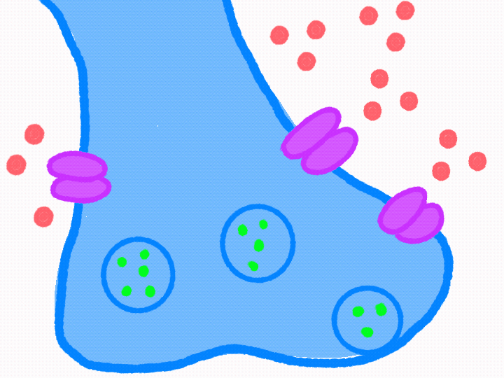

Now we are inside an axon terminal. First, the action potential arrives (yellow glowing). Voltage-regulated calcium channels embedded in the axon terminal membrane open in response to the change in action potential. Calcium ions rush into the terminal, triggering synaptic vesicles containing acetylcholine (ACh), a neurotransmitter, to move toward and fuse with the cell membrane. ACh is then released into the synaptic cleft through a process called exocytosis.
